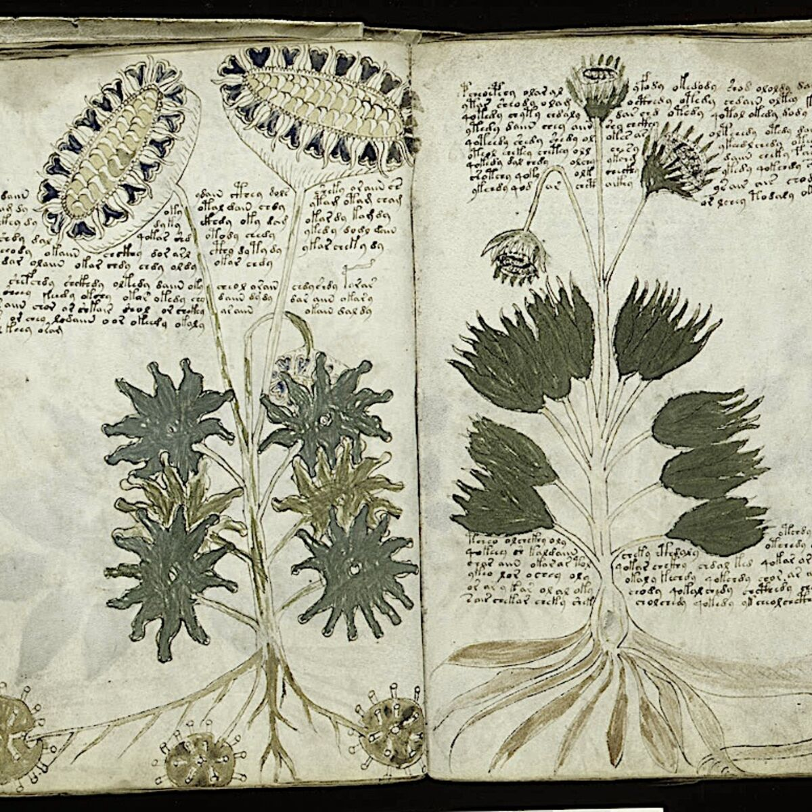

Ressources
Cette section rassemble les principales ressources utilisées par les membres du Centre Européen d'Études Voynich dans le cadre de leurs recherches. Nous essayons de maintenir cette liste à jour afin de faciliter l'accès aux documents historiques, aux bases de données universitaires et aux outils d'analyse.
La plupart des ressources présentées ci-dessous sont librement accessibles. Certaines publications universitaires peuvent nécessiter un accès institutionnel.
Bibliothèques numériques
- Bibliothèque Beinecke de l'Université Yale
- Bibliothèque nationale de France (Gallica)
- Internet Archive
- Project Gutenberg
- Europeana Collections
- British Library Digital Collections
La bibliothèque Beinecke de Yale conserve actuellement le manuscrit de Voynich sous la référence MS 408. Elle propose également une reproduction numérique de haute qualité consultable gratuitement.
Références documentaires
- Catalogue des folios connus
- Inventaire des illustrations botaniques
- Répertoire des diagrammes astronomiques
- Index des symboles récurrents
- Glossaire des principaux termes utilisés dans les études Voynich
Ces documents sont régulièrement mis à jour par différents groupes de recherche et permettent de comparer les résultats obtenus par plusieurs équipes indépendantes.
Outils d'analyse
Au cours des dernières années, de nombreux chercheurs ont développé des outils permettant d'étudier la structure interne du manuscrit.
- Analyse fréquentielle des glyphes
- Comparaison statistique des mots
- Reconnaissance optique de caractères (OCR)
- Cartographie des symboles
- Analyse de proximité lexicale
- Visualisation des structures répétitives
Ces outils ne permettent pas de déchiffrer directement le texte mais facilitent l'identification de régularités et de motifs récurrents.
Travaux universitaires recommandés
- Études linguistiques comparées
- Recherches cryptographiques
- Analyses historiques du parchemin
- Études iconographiques médiévales
- Travaux statistiques sur le vocabulaire Voynich
Les lecteurs souhaitant approfondir leurs recherches sont invités à consulter notre bibliographie détaillée.
Documents téléchargeables
- Catalogue simplifié des folios (PDF)
- Index des illustrations botaniques (PDF)
- Bibliographie commentée (PDF)
- Guide de découverte du manuscrit (PDF)
- Chronologie historique synthétique (PDF)
Ces documents sont proposés à titre informatif et ne constituent pas des publications scientifiques officielles.
Communautés et échanges
Les études relatives au manuscrit de Voynich reposent en grande partie sur la collaboration entre chercheurs indépendants, universitaires et passionnés.
Le Centre Européen d'Études Voynich encourage les échanges respectueux et la confrontation des idées. Toute contribution documentée est susceptible d'apporter un éclairage nouveau sur ce document exceptionnel.

Exemple de page fréquemment utilisée dans les travaux comparatifs.
Dernière mise à jour : mars 2024